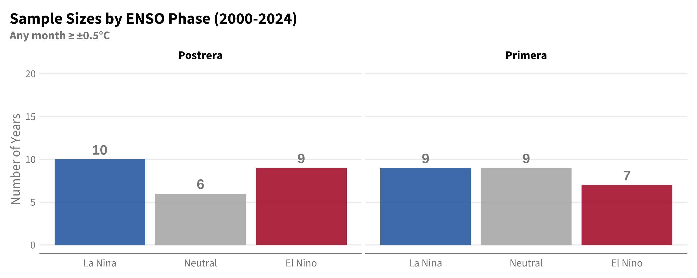
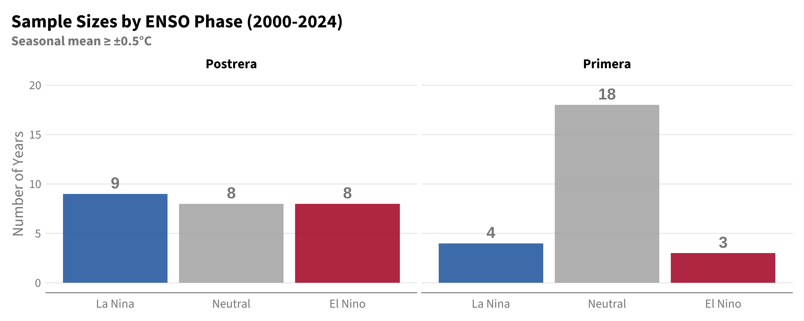
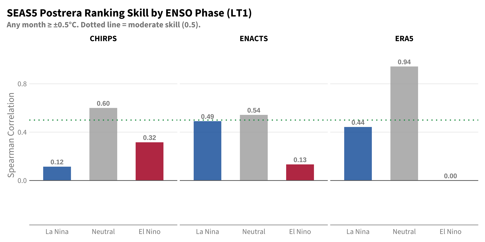
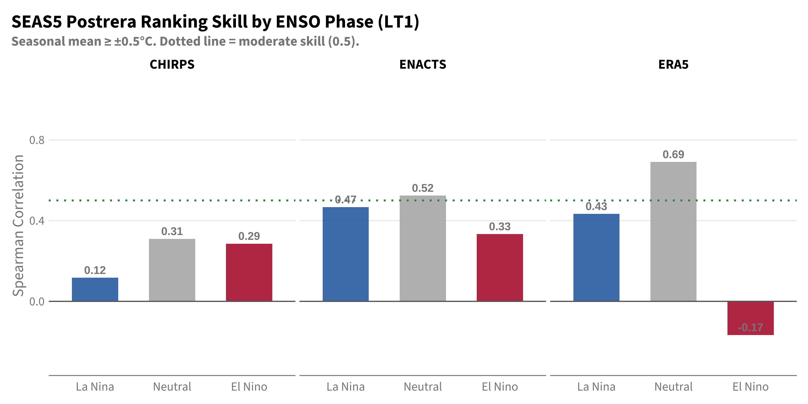
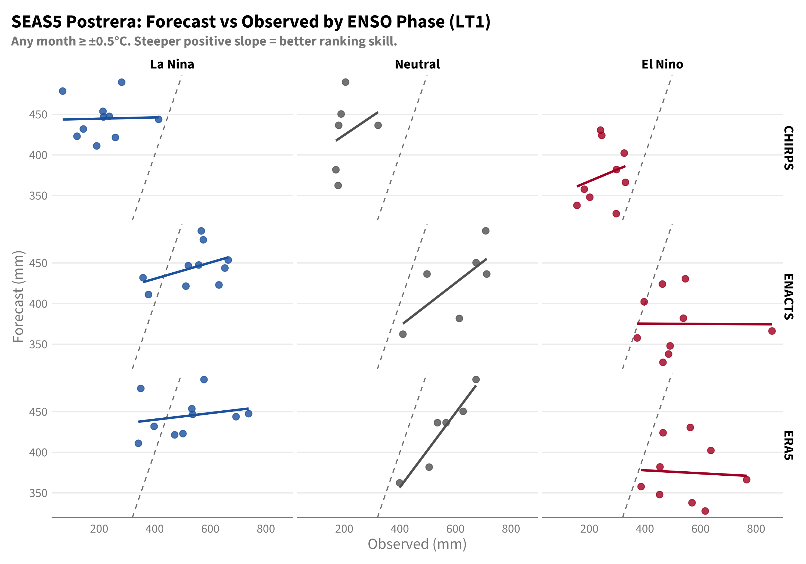
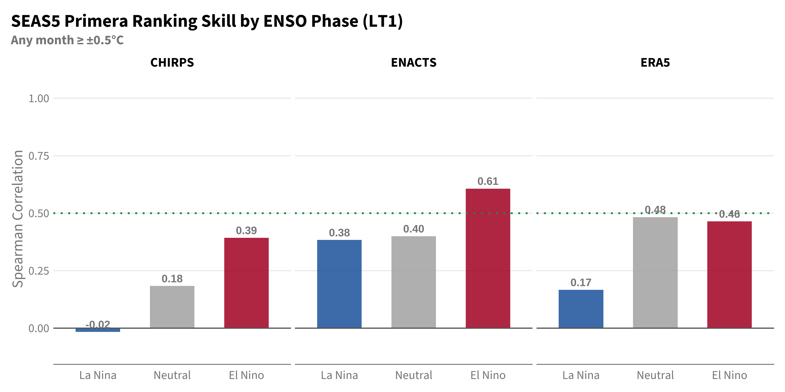
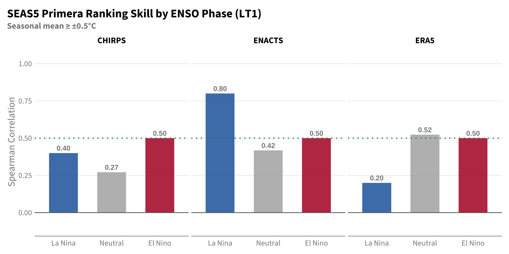

Setup
library(tidyverse)
library(lubridate)
library(cumulus)
library(gghdx)
gghdx()
box::use(../../R/enacts)
box::use(../../R/seas5)
BASELINE_START <- 2000
BASELINE_END <- 2024
PRIMERA_MONTHS <- 5:8
POSTRERA_MONTHS <- 9:11Previous chapters established that Postrera forecasts have limited skill compared to Primera. But skill metrics computed over the full historical record may mask important variation: are there conditions under which Postrera forecasts are more or less reliable?
ENSO (El Niño-Southern Oscillation) is the dominant mode of interannual climate variability affecting Central America. This chapter investigates whether forecast skill differs by ENSO phase, with a focus on identifying when Postrera forecasts might be trustworthy.
library(tidyverse)
library(lubridate)
library(cumulus)
library(gghdx)
gghdx()
box::use(../../R/enacts)
box::use(../../R/seas5)
BASELINE_START <- 2000
BASELINE_END <- 2024
PRIMERA_MONTHS <- 5:8
POSTRERA_MONTHS <- 9:11# Forecasts
df_insiv <- cumulus::blob_read(
name = "ds-aa-lac-dry-corridor/data/processed/insivumeh_special/insivumeh_special_models_zonal_seasonal_chiquimula.parquet",
container = "projects"
)
df_seas5 <- seas5$load_seas5_seasonal()
# ENACTS observations
df_enacts <- enacts$load_enacts_seasonal("chiquimula")
# ERA5 observations
con <- pg_con()
df_era5_raw <- tbl(con, "era5") |>
filter(pcode == "GT20") |>
collect() |>
mutate(
year = year(valid_date),
month = month(valid_date),
mean = mean * days_in_month(valid_date)
)
DBI::dbDisconnect(con)
df_era5 <- bind_rows(
df_era5_raw |> rename(value = mean) |>
filter(month %in% PRIMERA_MONTHS) |>
group_by(year) |>
summarise(obs_mm = sum(value, na.rm = TRUE), .groups = "drop") |>
mutate(window = "primera"),
df_era5_raw |> rename(value = mean) |>
filter(month %in% POSTRERA_MONTHS) |>
group_by(year) |>
summarise(obs_mm = sum(value, na.rm = TRUE), .groups = "drop") |>
mutate(window = "postrera")
)
# CHIRPS observations
df_chirps_raw <- cumulus::blob_read(
name = "ds-aa-lac-dry-corridor/raw/chirps/2026_cadc_drought_v3_aoi_chirps_monthly_historical.parquet",
container = "projects"
)
df_chirps <- df_chirps_raw |>
filter(ADM1_NAME == "Chiquimula") |>
mutate(year = year(date), month = month(date)) |>
mutate(
window = case_when(
month %in% PRIMERA_MONTHS ~ "primera",
month %in% POSTRERA_MONTHS ~ "postrera",
TRUE ~ NA_character_
)
) |>
filter(!is.na(window)) |>
group_by(year, window) |>
summarise(obs_mm = sum(value, na.rm = TRUE), .groups = "drop")
# Combine observations
df_obs_all <- bind_rows(
df_enacts |> mutate(obs_source = "ENACTS"),
df_era5 |> mutate(obs_source = "ERA5"),
df_chirps |> mutate(obs_source = "CHIRPS")
) |>
filter(year >= BASELINE_START, year <= BASELINE_END)
# ONI data
df_oni_raw <- cumulus::load_oni()We classify ENSO phase using the Oceanic Niño Index (ONI) for the concurrent season: - Primera (May-Aug): Use May-Aug (MJJA) ONI - Postrera (Sep-Nov): Use Sep-Nov (SON) ONI
We compare two classification approaches:
classify_enso <- function(
df_oni_raw,
months,
threshold_type = c("any", "average"),
threshold = 0.5,
start_year = BASELINE_START,
end_year = BASELINE_END
) {
threshold_type <- match.arg(threshold_type)
df_seasonal <- df_oni_raw |>
rename(year = yr, month = mon, oni = anom) |>
filter(month %in% months) |>
group_by(year) |>
summarise(
oni_mean = mean(oni, na.rm = TRUE),
oni_max = max(oni, na.rm = TRUE),
oni_min = min(oni, na.rm = TRUE),
.groups = "drop"
)
df_seasonal |>
mutate(
enso_phase = case_when(
threshold_type == "any" & oni_max >= threshold & oni_min > -threshold ~ "El Nino",
threshold_type == "any" & oni_min <= -threshold & oni_max < threshold ~ "La Nina",
threshold_type == "average" & oni_mean >= threshold ~ "El Nino",
threshold_type == "average" & oni_mean <= -threshold ~ "La Nina",
TRUE ~ "Neutral"
)
) |>
filter(year >= start_year, year <= end_year)
}# "Any month" threshold
df_oni_any <- bind_rows(
classify_enso(df_oni_raw, months = PRIMERA_MONTHS, threshold_type = "any") |>
mutate(window = "primera"),
classify_enso(df_oni_raw, months = POSTRERA_MONTHS, threshold_type = "any") |>
mutate(window = "postrera")
)
# "Seasonal average" threshold
df_oni_avg <- bind_rows(
classify_enso(df_oni_raw, months = PRIMERA_MONTHS, threshold_type = "average") |>
mutate(window = "primera"),
classify_enso(df_oni_raw, months = POSTRERA_MONTHS, threshold_type = "average") |>
mutate(window = "postrera")
)plot_sample_sizes <- function(df_oni, subtitle) {
df_oni |>
mutate(
enso_phase = factor(enso_phase, levels = c("La Nina", "Neutral", "El Nino")),
window = factor(window, levels = c("primera", "postrera"))
) |>
count(window, enso_phase) |>
ggplot(aes(x = enso_phase, y = n, fill = enso_phase)) +
geom_col(alpha = 0.85) +
geom_text(aes(label = n), vjust = -0.5, fontface = "bold", size = 5) +
facet_wrap(~str_to_title(window)) +
scale_fill_manual(
values = c("La Nina" = "#2166AC", "Neutral" = "#B0B0B0", "El Nino" = "#B2182B")
) +
scale_y_continuous(limits = c(0, 20)) +
labs(
title = "Sample Sizes by ENSO Phase (2000-2024)",
subtitle = subtitle,
x = NULL, y = "Number of Years"
) +
theme(legend.position = "none")
}plot_sample_sizes(df_oni_any, "Any month ≥ ±0.5°C")
plot_sample_sizes(df_oni_avg, "Seasonal mean ≥ ±0.5°C")
The “any month” threshold classifies more years as active ENSO (especially for Primera), while “seasonal average” results in more Neutral classifications.
We examine SEAS5 ranking ability (Spearman correlation) at leadtime 1 by ENSO phase, validated against all three observation sources.
df_fcst <- df_seas5 |>
filter(year >= BASELINE_START, year <= BASELINE_END, leadtime == 1)
# Join with "any month" classification
df_joined_any <- df_fcst |>
left_join(df_obs_all, by = c("year", "window")) |>
left_join(df_oni_any |> select(year, window, enso_phase), by = c("year", "window")) |>
filter(!is.na(obs_mm), !is.na(enso_phase))
# Join with "seasonal average" classification
df_joined_avg <- df_fcst |>
left_join(df_obs_all, by = c("year", "window")) |>
left_join(df_oni_avg |> select(year, window, enso_phase), by = c("year", "window")) |>
filter(!is.na(obs_mm), !is.na(enso_phase))calc_postrera_skill <- function(df_joined) {
df_joined |>
filter(window == "postrera") |>
group_by(obs_source, enso_phase) |>
summarise(
n_years = n(),
spearman = cor(value, obs_mm, method = "spearman"),
.groups = "drop"
) |>
mutate(enso_phase = factor(enso_phase, levels = c("La Nina", "Neutral", "El Nino")))
}
plot_postrera_skill <- function(postrera_skill, subtitle) {
postrera_skill |>
ggplot(aes(x = enso_phase, y = spearman, fill = enso_phase)) +
geom_col(alpha = 0.85, width = 0.6) +
geom_hline(yintercept = 0, linetype = "solid", color = "grey40") +
geom_hline(yintercept = 0.5, linetype = "dotted", color = "#1A9850", linewidth = 0.8) +
geom_text(aes(label = sprintf("%.2f", spearman)), vjust = -0.5, fontface = "bold", size = 3.5) +
facet_wrap(~obs_source) +
scale_fill_manual(
values = c("La Nina" = "#2166AC", "Neutral" = "#B0B0B0", "El Nino" = "#B2182B")
) +
scale_y_continuous(limits = c(-0.3, 1.05)) +
labs(
title = "SEAS5 Postrera Ranking Skill by ENSO Phase (LT1)",
subtitle = subtitle,
x = NULL, y = "Spearman Correlation"
) +
theme(legend.position = "none")
}
table_postrera_skill <- function(postrera_skill) {
postrera_skill |>
mutate(spearman = round(spearman, 2)) |>
select(obs_source, enso_phase, spearman) |>
pivot_wider(names_from = enso_phase, values_from = spearman) |>
select(obs_source, `La Nina`, Neutral, `El Nino`) |>
knitr::kable(
col.names = c("Obs Source", "La Niña", "Neutral", "El Niño"),
caption = "SEAS5 Postrera Spearman correlation by ENSO phase and observation source (LT1)"
)
}
postrera_skill_any <- calc_postrera_skill(df_joined_any)
postrera_skill_avg <- calc_postrera_skill(df_joined_avg)table_postrera_skill(postrera_skill_any)| Obs Source | La Niña | Neutral | El Niño |
|---|---|---|---|
| CHIRPS | 0.12 | 0.60 | 0.32 |
| ENACTS | 0.49 | 0.54 | 0.13 |
| ERA5 | 0.44 | 0.94 | 0.00 |
plot_postrera_skill(postrera_skill_any, "Any month ≥ ±0.5°C. Dotted line = moderate skill (0.5).")
table_postrera_skill(postrera_skill_avg)| Obs Source | La Niña | Neutral | El Niño |
|---|---|---|---|
| CHIRPS | 0.12 | 0.31 | 0.29 |
| ENACTS | 0.47 | 0.52 | 0.33 |
| ERA5 | 0.43 | 0.69 | -0.17 |
plot_postrera_skill(postrera_skill_avg, "Seasonal mean ≥ ±0.5°C. Dotted line = moderate skill (0.5).")
Key finding: Results vary by ENSO classification method and observation source. With the “any month” threshold, El Niño years show consistently low skill, while Neutral years show the highest skill.
The results are sensitive to observation source choice, which complicates interpretation.
The within-phase correlation analysis above has limited statistical power with only 6-10 years per phase. A more practical question is: “If I know it’s an El Niño year, is the SEAS5 forecast more or less reliable than usual?”
# Use ENACTS as reference, rank against ALL 25 years
df_operational <- df_joined_any |>
filter(window == "postrera", obs_source == "ENACTS") |>
mutate(
# Rank against all years (not within phase)
obs_rank_all = rank(obs_mm),
fcst_rank_all = rank(value),
rank_error = abs(obs_rank_all - fcst_rank_all),
abs_error = abs(value - obs_mm),
bias = value - obs_mm
)df_operational |>
group_by(enso_phase) |>
summarise(
n = n(),
`Observed Mean (mm)` = round(mean(obs_mm)),
`Forecast Mean (mm)` = round(mean(value)),
.groups = "drop"
) |>
arrange(`Observed Mean (mm)`) |>
knitr::kable(caption = "SEAS5 correctly predicts El Niño as driest on average")| enso_phase | n | Observed Mean (mm) | Forecast Mean (mm) |
|---|---|---|---|
| El Nino | 9 | 513 | 375 |
| La Nina | 10 | 542 | 445 |
| Neutral | 6 | 603 | 426 |
SEAS5 captures the average ENSO signal: El Niño years are driest (513mm observed), and SEAS5 predicts them as driest (375mm forecast). The phase ordering is correct.
df_operational |>
group_by(enso_phase) |>
summarise(
n = n(),
`Mean Abs Error (mm)` = round(mean(abs_error)),
`Mean Rank Error` = round(mean(rank_error), 1),
.groups = "drop"
) |>
knitr::kable(caption = "Forecast error by ENSO phase (ranked against all 25 years)")| enso_phase | n | Mean Abs Error (mm) | Mean Rank Error |
|---|---|---|---|
| El Nino | 9 | 139 | 6.2 |
| La Nina | 10 | 119 | 5.7 |
| Neutral | 6 | 177 | 4.8 |
El Niño years have the highest rank error (6.2 positions) - meaning SEAS5 systematically misplaces El Niño years relative to where they actually fall.
df_operational |>
filter(enso_phase == "El Nino") |>
arrange(obs_rank_all) |>
select(year, obs_mm, value, obs_rank_all, fcst_rank_all, rank_error) |>
mutate(
obs_mm = round(obs_mm),
value = round(value)
) |>
knitr::kable(
col.names = c("Year", "Observed (mm)", "Forecast (mm)", "Obs Rank (of 25)", "Fcst Rank (of 25)", "Rank Error"),
caption = "El Niño Postrera years ranked against ALL 25 years"
)| Year | Observed (mm) | Forecast (mm) | Obs Rank (of 25) | Fcst Rank (of 25) | Rank Error |
|---|---|---|---|---|---|
| 2009 | 372 | 358 | 2 | 4 | 2 |
| 2019 | 397 | 402 | 4 | 9 | 5 |
| 2023 | 463 | 424 | 6 | 13 | 7 |
| 2015 | 465 | 328 | 7 | 1 | 6 |
| 2018 | 485 | 338 | 8 | 2 | 6 |
| 2002 | 491 | 348 | 9 | 3 | 6 |
| 2004 | 538 | 382 | 13 | 8 | 5 |
| 2006 | 545 | 431 | 14 | 14 | 0 |
| 2014 | 857 | 366 | 25 | 6 | 19 |
The 2014 problem: This El Niño year was the wettest Postrera in 25 years (857mm, rank 25), but SEAS5 predicted it as moderately dry (366mm, rank 6). A 19-position error is catastrophic for operational use.
Several other El Niño years (2015, 2018, 2002) show 6-position errors where SEAS5 predicted them as the driest years but they were actually mid-range.
The ranking analysis above focused on all years, but operationally we care about drought detection. Can SEAS5 identify which El Niño years will be droughts (RP4 threshold)?
# RP4 drought threshold
drought_thresh <- quantile(
df_joined_any |> filter(window == "postrera", obs_source == "ENACTS") |> pull(obs_mm),
0.25
)df_drought <- df_joined_any |>
filter(window == "postrera", obs_source == "ENACTS") |>
mutate(is_drought = obs_mm <= drought_thresh)
df_drought |>
group_by(enso_phase) |>
summarise(
`Years` = n(),
`Droughts` = sum(is_drought),
`Drought Rate` = scales::percent(mean(is_drought), accuracy = 1),
.groups = "drop"
) |>
knitr::kable(caption = sprintf("Drought frequency by ENSO phase (threshold: %d mm)", round(drought_thresh)))| enso_phase | Years | Droughts | Drought Rate |
|---|---|---|---|
| El Nino | 9 | 4 | 44% |
| La Nina | 10 | 2 | 20% |
| Neutral | 6 | 1 | 17% |
El Niño years have a 44% drought rate - more than double the rate for other phases. This is valuable climatological information.
df_elnino <- df_drought |> filter(enso_phase == "El Nino")
df_elnino |>
arrange(obs_mm) |>
mutate(
obs_mm = round(obs_mm),
value = round(value),
fcst_rank = rank(value)
) |>
select(year, obs_mm, value, is_drought, fcst_rank) |>
knitr::kable(
col.names = c("Year", "Observed (mm)", "Forecast (mm)", "Drought?", "Fcst Rank"),
caption = "El Niño years sorted by observed rainfall"
)| Year | Observed (mm) | Forecast (mm) | Drought? | Fcst Rank |
|---|---|---|---|---|
| 2009 | 372 | 358 | TRUE | 4 |
| 2019 | 397 | 402 | TRUE | 7 |
| 2023 | 463 | 424 | TRUE | 8 |
| 2015 | 465 | 328 | TRUE | 1 |
| 2018 | 485 | 338 | FALSE | 2 |
| 2002 | 491 | 348 | FALSE | 3 |
| 2004 | 538 | 382 | FALSE | 6 |
| 2006 | 545 | 431 | FALSE | 9 |
| 2014 | 857 | 366 | FALSE | 5 |
# ROC-AUC for El Niño drought detection
calc_auc_safe <- function(df) {
if(length(unique(df$is_drought)) < 2) return(NA_real_)
df <- df |> mutate(drought_factor = factor(is_drought, levels = c(TRUE, FALSE)))
tryCatch({
yardstick::roc_auc(df, truth = drought_factor, value, event_level = "first")$.estimate
}, error = function(e) NA_real_)
}
elnino_auc <- calc_auc_safe(df_elnino)
# Compare mean forecasts
drought_fcst <- mean(df_elnino |> filter(is_drought) |> pull(value))
non_drought_fcst <- mean(df_elnino |> filter(!is_drought) |> pull(value))El Niño ROC-AUC = 0.5 (random chance = 0.50)
SEAS5 has no skill at distinguishing El Niño drought years from non-drought years. Worse, SEAS5 gives slightly higher forecasts to drought years (378 mm) than non-drought years (373 mm) - the wrong direction.
Can we use SEAS5 Postrera forecasts during El Niño for drought anticipation? No.
El Niño itself is informative: 44% of El Niño Postreras are droughts (vs ~20% baseline). If you know it’s El Niño, you already know drought risk is elevated.
SEAS5 adds nothing: With ROC-AUC of 0.50, SEAS5 cannot distinguish which El Niño years will be droughts. It’s literally coin-flip accuracy.
Operational recommendation: During El Niño, use the elevated baseline drought probability (44%) for decision-making. Don’t use the specific SEAS5 forecast value - it provides no additional information.
plot_scatter_postrera <- function(df_joined, subtitle) {
df_joined |>
filter(window == "postrera") |>
mutate(enso_phase = factor(enso_phase, levels = c("La Nina", "Neutral", "El Nino"))) |>
ggplot(aes(x = obs_mm, y = value, color = enso_phase)) +
geom_abline(slope = 1, intercept = 0, linetype = "dashed", color = "grey50") +
geom_point(size = 2.5, alpha = 0.8) +
geom_smooth(method = "lm", se = FALSE, linewidth = 1) +
facet_grid(obs_source ~ enso_phase) +
scale_color_manual(
values = c("La Nina" = "#2166AC", "Neutral" = "#636363", "El Nino" = "#B2182B")
) +
labs(
title = "SEAS5 Postrera: Forecast vs Observed by ENSO Phase (LT1)",
subtitle = subtitle,
x = "Observed (mm)", y = "Forecast (mm)"
) +
theme(legend.position = "none")
}plot_scatter_postrera(df_joined_any, "Any month ≥ ±0.5°C. Steeper positive slope = better ranking skill.")
plot_scatter_postrera(df_joined_avg, "Seasonal mean ≥ ±0.5°C. Steeper positive slope = better ranking skill.")
Across all observation sources, the El Niño panels show flat or weakly sloped regression lines - the forecast values are essentially uncorrelated with observations. La Niña and Neutral show positive slopes indicating ranking skill.
For completeness, we verify that Primera skill (LT1) does not show concerning ENSO-phase dependence.
calc_primera_skill <- function(df_joined) {
df_joined |>
filter(window == "primera") |>
group_by(obs_source, enso_phase) |>
summarise(
n_years = n(),
spearman = cor(value, obs_mm, method = "spearman"),
.groups = "drop"
) |>
mutate(enso_phase = factor(enso_phase, levels = c("La Nina", "Neutral", "El Nino")))
}
plot_primera_skill <- function(primera_skill, subtitle) {
primera_skill |>
ggplot(aes(x = enso_phase, y = spearman, fill = enso_phase)) +
geom_col(alpha = 0.85, width = 0.6) +
geom_hline(yintercept = 0, linetype = "solid", color = "grey40") +
geom_hline(yintercept = 0.5, linetype = "dotted", color = "#1A9850", linewidth = 0.8) +
geom_text(aes(label = sprintf("%.2f", spearman)), vjust = -0.5, fontface = "bold", size = 3.5) +
facet_wrap(~obs_source) +
scale_fill_manual(
values = c("La Nina" = "#2166AC", "Neutral" = "#B0B0B0", "El Nino" = "#B2182B")
) +
scale_y_continuous(limits = c(-0.1, 1.05)) +
labs(
title = "SEAS5 Primera Ranking Skill by ENSO Phase (LT1)",
subtitle = subtitle,
x = NULL, y = "Spearman Correlation"
) +
theme(legend.position = "none")
}
table_primera_skill <- function(primera_skill) {
primera_skill |>
mutate(spearman = round(spearman, 2)) |>
select(obs_source, enso_phase, spearman) |>
pivot_wider(names_from = enso_phase, values_from = spearman) |>
select(obs_source, `La Nina`, Neutral, `El Nino`) |>
knitr::kable(
col.names = c("Obs Source", "La Niña", "Neutral", "El Niño"),
caption = "SEAS5 Primera Spearman correlation by ENSO phase and observation source (LT1)"
)
}
primera_skill_any <- calc_primera_skill(df_joined_any)
primera_skill_avg <- calc_primera_skill(df_joined_avg)table_primera_skill(primera_skill_any)| Obs Source | La Niña | Neutral | El Niño |
|---|---|---|---|
| CHIRPS | -0.02 | 0.18 | 0.39 |
| ENACTS | 0.38 | 0.40 | 0.61 |
| ERA5 | 0.17 | 0.48 | 0.46 |
plot_primera_skill(primera_skill_any, "Any month ≥ ±0.5°C")
table_primera_skill(primera_skill_avg)| Obs Source | La Niña | Neutral | El Niño |
|---|---|---|---|
| CHIRPS | 0.4 | 0.27 | 0.5 |
| ENACTS | 0.8 | 0.42 | 0.5 |
| ERA5 | 0.2 | 0.52 | 0.5 |
plot_primera_skill(primera_skill_avg, "Seasonal mean ≥ ±0.5°C")
Primera shows positive correlations across all phases and observation sources regardless of ENSO classification method. Primera skill is not contingent on ENSO phase.
Can we use SEAS5 Postrera forecasts during El Niño for drought anticipation? No.
However, El Niño itself is informative: 44% of El Niño Postreras are droughts (vs ~20% for other phases). Knowing it’s El Niño doubles your baseline drought probability - that’s useful even without SEAS5.
El Niño years: Use climatology, not SEAS5. If you know it’s El Niño, expect below-normal rainfall on average. But don’t trust the specific SEAS5 forecast value - it could be wildly wrong (as in 2014).
Neutral years show best skill: SEAS5 Postrera forecasts have the most reliable ranking ability during ENSO-neutral conditions.
Primera is unaffected: SEAS5 Primera skill is consistent across all ENSO phases - no need for ENSO-conditional decision rules.
Primera is unaffected: SEAS5 Primera skill is consistent across ENSO phases and does not require this stratification.